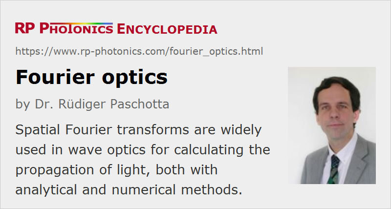

Fourier Optics
Definition: the description of light propagation based on transverse spatial Fourier transforms
More general term: optics
German: Fourier-Optik
How to cite the article; suggest additional literature
Author: Dr. Rüdiger Paschotta
In wave optics, one often applies mathematical methods which include transverse spatial Fourier transforms, and are thus called methods of Fourier optics. The corresponding calculations, which often involve one-dimensional or two-dimensional integrals, can sometimes be done with purely analytical means. Fourier methods are also widely used for numerical computations.
The purpose of Fourier optics is essentially to calculate and analyze how light propagates e.g. in optical instruments like microscopes, taking into account its wave nature (in contrast to geometrical optics). Both refractive and diffractive optics can be investigated with Fourier optics. Such methods are mostly restricted to situations where light propagates essentially in one direction; however, the paraxial approximation (substantially limiting the angular range) is often not required, and certain extensions for bidirectional propagation are also possible. Therefore, Fourier optics is applicable to a wide range of cases of practical interest.
Various central results of Fourier optics, some of which are explained in this introductory article, are highly useful for developing a deeper qualitative understanding of light propagation. Besides, for you optics methods allow for accurate quantitative calculations in many cases – particularly when using numerical tools.
General Principles
Fourier optics calculations are often made for monochromatic light. For applications with polychromatic light, one will often simply do the corresponding calculations for a set of optical wavelengths which can be considered as representative.
The monochromatic light is usually described with complex amplitudes, containing information both on amplitude and phase of the electrical installation. Frequently, one uses a purely scalar wave model, ignoring aspects like polarization.
The complex amplitudes are often considered in planes perpendicular to the optical axis of a system. Input light is described by amplitudes in some input plane, e.g. at z = 0, and the output may be the resulting amplitude distribution at some larger z value, e.g. corresponding to a position behind an optical instrument. Alternatively, one may calculate the far field distribution with angles instead of positions as coordinates.
Decomposition into Plane Waves
The light field in a particular plane may be described with complex amplitudes A(x, y), where the coordinates x and y are zero on the optical axis. Those amplitudes may represent, for example, the x or y component of the electric field. The application of a spatial Fourier transform in two dimensions (x and y) leads to the Fourier-space amplitude field AF(νx, νy), where νx and νy are transverse spatial frequencies, indicating the number of oscillation cycles per unit length.
The spatial frequencies can then be associated with the Cartesian components of the wave vector:
From those components, one can calculate the z component of the wave vector:
where k = 2π / λ is the magnitude of the wave vector, which is independent of propagation direction in free space or in an isotropic optical material.
We have taken a positive sign, assuming propagation of light in the positive z direction. Further, one usually assumes that the spatial frequencies are small enough for the term under the square root to be positive. Otherwise, one would obtain an imaginary wave vector component, describing an exponentially rising or decaying amplitude, as obtained e.g. for evanescent waves.
Essentially, the spatial Fourier transform provides a decomposition of the light field into plane waves, which have a continuous spectrum of propagation directions but all have the same magnitude according to the chosen wavelength.
Transfer Function of Free Space
The propagation of light in free space is easily described, because the Fourier transform delivers a superposition of plane waves, and those are modes of free space. (The same holds for propagation in a homogeneous optical media with a certain refractive index; one can just do the same calculations, taking the wavelength in the medium instead of the vacuum wavelength.) For a propagation distance d, the resulting phase shift of each plane wave is simply kz z. (Some authors use the opposite sign convention, resulting in the opposite sign also for all phase terms in the following.) Therefore, the transfer function of free space for a propagation distance d is:
While this is easy to handle in numerical calculations, for analytical calculations it is often necessary to apply an approximation in order to get a simpler term. One frequently applies the Fresnel approximation with the underlying assumption
and obtains (approximately)
The constant term is often ignored, if it is irrelevant for the application.
The calculation of the resulting amplitudes after some propagation distance is then simple:
- Apply a spatial Fourier transform to the amplitudes.
- Multiply the result with the given transfer function.
- Apply an inverse spatial Fourier transform if the results are needed in real space.
In simple cases, this can be done with analytical means, sometimes leading to fairly simple equations as found in many textbooks.
Effects of Optical Elements
The effect of optical elements can often be described (with some simplification) as a multiplication of the amplitudes with spatially dependent real or complex factors:
- A hard aperture may be defined with a transmission function tap(x, y) which only has values 0 and 1. For a soft aperture, the function values can vary continuously.
- Similarly, one may treat cases with gain e.g. in a laser gain medium.
- A thin lens can be described with a complex phase factor which varies in proportion to the square of the distance from the optical axis (ignoring a constant offset as well as the finite size of the lens):
- A diffraction grating is described with a periodically varying phase factor. There may be an approximately sinusoidal oscillation for a holographic grating or a more complicated oscillating function (having several harmonics) for a ruled grating.
Again, analytical solutions are known for certain simple situations, at least for the far field (see below) – for example for calculating the diffraction patterns for single or multiple slits or for circular apertures.
For calculating the effect of a sequence of optical elements with air spaces in between, one can do the propagation step by step, applying spatial Fourier transforms as needed to switch between real and Fourier space. Only, one may then soon leave the area where analytical solutions are available.
The Far Field
Sometimes, one is interested in the far field, i.e., in the light field after a large propagation distance, where the angular intensity distributions stays approximately constant. The angular field distribution can easily be calculated from the Fourier-transformed spatial field distribution; one only needs to properly scale the angles to obtain the corresponding spatial frequencies:
By taking the squared modulus of those amplitudes, one obtains the far field intensity profile.
It is thus not necessary to propagate the field over a large distance to approximate the far field; instead, one can simply compute the Fourier-transformed amplitude field and calculate the far field from that. The mentioned result can be proven using the Fraunhofer approximation, for example.
Fourier Planes
Another interesting finding is that one obtains a so-called Fourier plane in a distance of one focal length after a thin lens (i.e., in the back focal plane), assuming a quadratic phase profile as given above. Each position in that plane corresponds to a certain spatial frequency of the input field (before the lens), more precisely to certain values of νx and νy.
As the spatial Fourier transform reveals the far field distribution, as explained above, it is apparent that by using a lens one can reveal that pattern without applying a large propagation distance.
By placing an optical aperture in a Fourier plane, one can effectively modulate the spatial frequency spectrum. For example, with a circular aperture centered on the optical axis, one can implement a low-pass filter, transmitting only components with sufficiently low spatial frequencies. (That is the operation principle of some mode cleaners.) With a second lens, one can transform back into real space.
Note that the finite size of a lens also introduces an aperture and therefore some low-pass filtering. This is what limits the spatial resolution of a microscope objective, for example. Therefore, a Fourier plane in a strict sense cannot be realized with lenses of finite size: each spatial frequency component causes a spot of finite size in the focal plane. On the other hand, the finite size does not matter in practice if the input beams are anyway restricted to a smaller spatial region.
Numerical Beam Propagation
It is conceptually relatively simple to implement a numerical beam propagation algorithm based on Fourier optics:
- Every field distribution in a plane is represented by a regular a array of field amplitudes, which should cover a sufficiently large area (somewhat beyond the area where significant fields can occur). Further, the spacing of the grid points should be small enough to provide the required spatial resolution. Note that spatial resolution is directly linked to the possible range of spatial frequencies or propagation angles.
- One can apply a two-dimensional Fast Fourier Transform (FFT) algorithm for efficient computations. This works best if the number of grid points in each direction is a power of 2.
- An air space between two optical components can be bridged with just one Fourier transform and inverse transform, no matter how large the spacing is. Only if the field distributions at intermediate places are of interest, additional Fourier transforms need to be used.
Additional difficulties arise in cases where one needs to propagate fields through inhomogeneous items. For example, for light propagation in an optical fiber one needs to take into account the refractive index profile around the fiber core and possibly even at the age of the fiber cladding. For such cases, one may apply a split-step Fourier technique, where one alternatingly simulates the effects of diffraction (in Fourier space) and of the refractive index profile (in real space). A high numerical accuracy requires the choice of a sufficiently small step size. Computation times can be long for propagation over long distances with a small step size, particularly if the required amplitude grids are large. Therefore, one sometimes applies additional tricks which allow one to strongly restrict the covered spatial area.
It is possible to study ultrashort pulse propagation, particularly in the linear regime. Here, one needs to perform Fourier optics calculations for many wavelength components of a pulse. The results can be assembled to describe the propagation of the whole pulse. Such calculations can quickly become rather time- and memory intensive, however.
Questions and Comments from Users
Here you can submit questions and comments. As far as they get accepted by the author, they will appear above this paragraph together with the author’s answer. The author will decide on acceptance based on certain criteria. Essentially, the issue must be of sufficiently broad interest.
Please do not enter personal data here; we would otherwise delete it soon. (See also our privacy declaration.) If you wish to receive personal feedback or consultancy from the author, please contact him e.g. via e-mail.
By submitting the information, you give your consent to the potential publication of your inputs on our website according to our rules. (If you later retract your consent, we will delete those inputs.) As your inputs are first reviewed by the author, they may be published with some delay.
Bibliography
| [1] | A. E. Siegman, Lasers, University Science Books, Mill Valley, CA (1986) |
| [2] | B. E. A. Saleh and M. C. Teich, Fundamentals of Photonics, John Wiley & Sons, Inc., New York (1991) |
See also: wave optics, plane waves, near field and far field
and other articles in the category general optics

This encyclopedia is authored by Dr. Rüdiger Paschotta, the founder and executive of RP Photonics Consulting GmbH. How about a tailored training course from this distinguished expert at your location? Contact RP Photonics to find out how his technical consulting services (e.g. product designs, problem solving, independent evaluations, training) and software could become very valuable for your business!
|  |
If you like this page, please share the link with your friends and colleagues, e.g. via social media:
These sharing buttons are implemented in a privacy-friendly way!